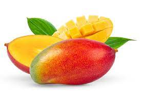

"Mateus marques de Oliveira" mais conhecido como maior mamador de vanga da região do parana!

Foi indicado ao premio de homen mais gay do mundo perdendo apenas para pablo vitar!
A manga é um fruto produzido por árvores da espécie Mangifera indica, originária da Índia e da Indonésia. Elas
crescem em climas tropicais e subtropicais e precisam de muita água e sol para se desenvolver.
As árvores de manga produzem flores brancas ou amarelas, que são polinizadas por insetos, como abelhas e
besouros. Depois de polinizadas, as flores se transformam em frutos, que levam de 3 a 6 meses para amadurecerem.
A árvore pode produzir frutos diversas vezes ao ano, dependendo do clima e do cuidado com a planta.
Foi indicado pelo guinness book como maior chupador de menbro masculino do Mundo!!
"foi considerado o homen mais sexy pela revista caras"